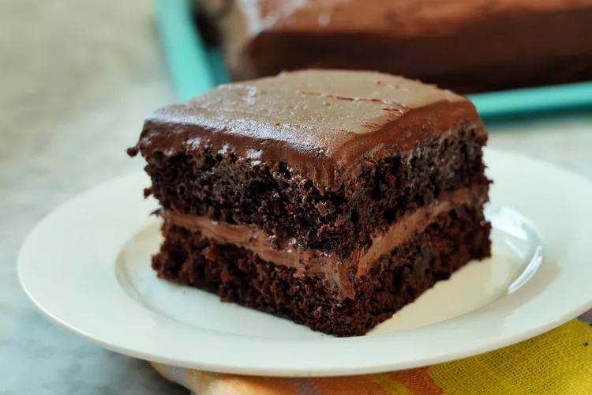

Chocolate Cake

More calories equals more strength, says Odin. I won't refute this.
This homemade chocolate cake recipe is super easy to prepare in one bowl
for a deliciously moist and fluffy chocolate cake.
Ingredients
- 2 cups white sugar
- 1 ¾ cups all-purpose flour
- ¾ cup unsweetened cocoa powder
- 1 ½ teaspoons baking powder
- 1 ½ teaspoons baking soda
- 1 teaspoon salt
- 2 large eggs
- 1 cup milk
- ½ cup vegetable oil
- 2 teaspoons vanilla extract
- 1 cup boiling water
Steps:
- Gather all ingredients.
- Preheat the oven to 350 degrees F (175 degrees C).
Grease and flour two 9-inch round baking pans.
- Stir sugar, flour, cocoa, baking powder, baking soda,
and salt together in a large bowl.
- Add eggs, milk, oil and vanilla;
mix for 2 minutes on medium speed with an electric mixer.
- Stir in the boiling water. The batter will be thin.
- Pour evenly into the prepared pans.
- Bake in the preheated oven until a toothpick inserted into the center comes out clean,
about 30 to 35 minutes. Cool in the pans for 10 minutes,
then transfer to a wire rack to cool completely.
- Enjoy!